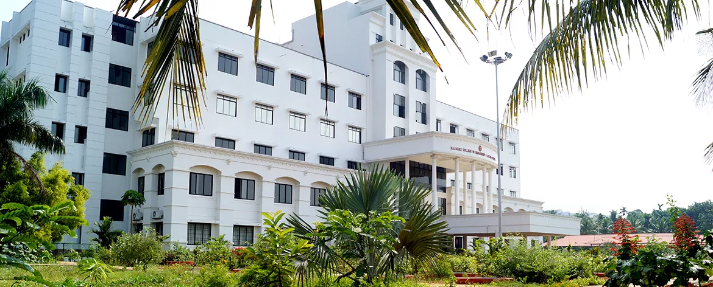
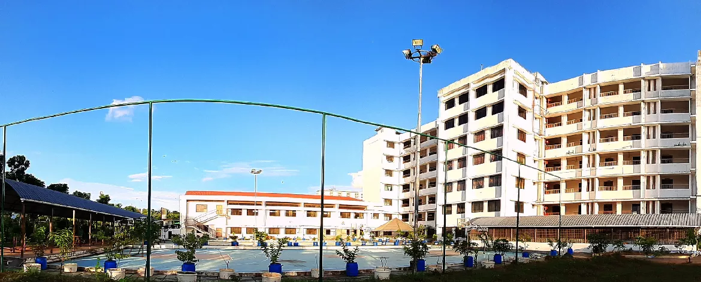

Rajagiri College of Management and Applied Sciences, Kakkanad is a vision of the Sacred Heart Province of Carmelites of Mary Immaculate (CMI) Congregation, the first indigenous Catholic religious congregation in India. The institution marked its inception in the year 2005 and is modelled on the dream and vision of Saint Kuriakose Elias Chavara, the founder of CMI Congregation and a social reformer of 19th century. Celebrating its crystal jubilee the college aims at the formation of future leaders who intellectually, spiritually and morally champion the cause of justice, love, truth and peace.
 